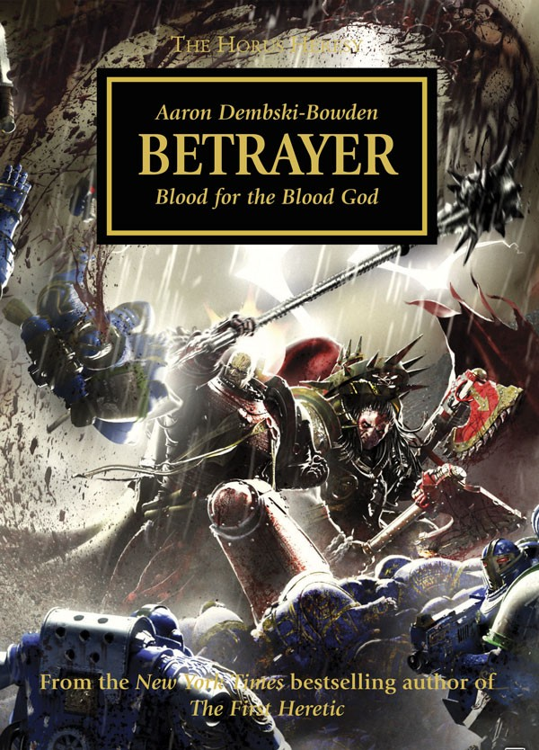

BETRAYER

Author: Aaron Dembski-Bowden
Format: Novel
While Calth burns, Lorgar’s Word Bearers and Angron’s World Eaters strike across Ultramar. Their alliance is uneasy, and the Ultramarines must find a way to contain the Shadow Crusade.
Introduction reviewed against Black Library’s description on 2026-09-27. The publisher page may contain spoilers.
Publication facts: publisher source, checked 2026-09-26.
Open this work in the interactive Archive to track reading progress and explore related works.